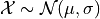
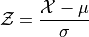
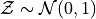
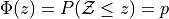
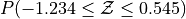
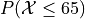
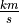

Normality#
All models are wrong, but some are useful.
—George Box
Normality is an important phenomenon because of its far-reaching power. Due to the Central Limit Theorem, the distribution of the sample mean becomes Normal as the number of experiments and the number of observations per experiment increases. Due to the Law of Large Numbers, as these numbers increase, the distribution of the sample mean becomes centered around the true population mean. Using these two facts, normality allows us to draw statistical inferences about population parameters using a sample drawn from an arbitrarily distributed population.
The averaging effect of the Central Limit Theorem is more pronounced when the population being sampled is itself Normal (in mathematical terms, we say the sample distribution converges to the population distribution more quickly when the population is Normal); This assumption is not required, though. Any population distribution can be transformed into a Normal distribution by averaging observations drawn from its pool of outcomes. Recall the die roll simulation from class, where a uniformly distributed population became Normal when observations were averaged.
For this reason, we are often interested in determining whether a given population is normally distributed. In this project, we will learn how to perform Normal Calculations using Python. Using these techniques, we will compare theoretically determined population parameters to empirically determined sample statistics in order to see how the Normal Distribution can be used to model population distributions.
Instructions#
Download both csv datasets in the Datasets section and place them in the
Linux Filesfolder on your file system where you save your.pyscripts.
Note
If you haven’t deleted anything, you will already have the Velocity of Light data in your Linux Files.
Create a Python
.pyscript namedNAME_project_three.pyin yourLinux Filesfolder on your file system. You can do this by opening an IDLE session, creating a new file and then saving it. ReplaceNAMEwith your name.Create a docstring at the very top of the script file. Keep all written answers in this area of the script.
Read the Background section.
Load in the data from the
.csvfiles using the technique outlined in the Loading Data section.Perform all exercises and answer all questions in the Project section. Label your script with comments as indicated in the instructions of each problem.
When you are done, zip your script and the csv file in a zip file named
NAME_project_three.zipUpload the zip file to the Google Classroom Project Three Assignment.
Background#
Normality arises when observations being randomly drawn from a population are independent and identically distributed. In other words, if a series of experiments are performed where each experiment is the same as the last in every respect, then the outcomes of all the experiments taken together should be approximately normal.
Hint
Recall our die roll experiment from class. The underlying population distribution was uniform (each face of the die is an equally likely outcome), but when the outcomes of each independent die roll were summed together, the resulting distribution became normal.
A departure from normality can suggest several things:
The selection process was not random.
The observations are not independent.
The observations are not being drawn from the same population.
Normal Distribution#
A Normal Distribution is parameterized by its mean,  , and its standard deviation,
, and its standard deviation,  . If a single observation is being drawn from this Normal Distribution, we write,
. If a single observation is being drawn from this Normal Distribution, we write,

Recall a sample of data can be transformed by applying algebraic operations to each observation. For instance, we can standardize each observation  into a z-score by subtracting the mean of the distribution and dividing by the standard deviation of the distribution,
into a z-score by subtracting the mean of the distribution and dividing by the standard deviation of the distribution,

This is a special distribution, as we have seen. If the  distribution is Normal, then the
distribution is Normal, then the  is a Standard Normal. Any distribution that has this type of transformation applied to it will have a mean of 0 and a standard deviation of 1. In symbols, we write,
is a Standard Normal. Any distribution that has this type of transformation applied to it will have a mean of 0 and a standard deviation of 1. In symbols, we write,

Cumulative Distribution Function#
The cumulative distribution function (CDF) for the Standard Normal distribution is an extremely important function in mathematics. Symbolically, it is written,

This function, recall, represents the area of the density curve below the point  . In other words, this function tells us the percentage
. In other words, this function tells us the percentage  of the Standard Normal distribution that is less than or equal to the point . To put it yet another way, it tells us what percentage of the original Normal distribution is less than or equal to standard deviations away from the mean.
of the Standard Normal distribution that is less than or equal to the point . To put it yet another way, it tells us what percentage of the original Normal distribution is less than or equal to standard deviations away from the mean.
Inverse Cumulative Distribution Function#
Every well-behaved function has an inverse. The CDF of the Normal Distribution is no different. The inverse CDF is denoted,

The CDF tells us, given a value of , what percent of the distribution is below . The inverse CDF, on the other hand, tells us, given a value of , what observation corresponds to that percentile. It is the point on the Normal density curve such that the shaded area below is equal to .
Normal Objects#
The following code snippet illustrates how to create and use a Normal Distribution object in Python,
import statistics
# Create the Normal Distribution object
mean = 100
std_dev = 10
dist = statistics.NormalDist(mean, std)
# Use the Normal Distribution object to calculate probabilities
prob = dist.cdf(120)
rounded_prob = round(prob, 2)
print("P(X <= 120) = ", rounded_prob)
# Use the Normal Distribution object to calculate percentiles
third_quartile = dist.inv_cdf(0.75)
rounded_quartile = round(third_quartile,2)
print("P(X <= ", rounded_quartile , ") = 0.75")
Output:
P(X <= 120) = 0.98
P(X <= 106.74) = 0.75
For a more comprehensive explanation of NormalDist() from the statistics package and its various uses, refer to the Python Normal Distribution page.
Ideal Plots#
The ideal distribution is another word for the population distribution. The Normal object in Python has a function for calculating the density of the Normal curve at a point. This allows us to plot the ideal distribution over top of the sample distribution to see how they compare.
import random
import statistics as stat
import matplotlib.pyplot as mpl
data = [ 1, 3, 4, 4, 5, 5, 6, 6, 6, 7, 7, 7, 8, 8, 9, 9,10,12 ]
(fig, axes) = mpl.subplots()
# find range of data sample_min
sample_min = min(data)
sample_max = max(data)
# divide range in 1000 sub-intervals
m = 1000
delta = (sample_max - sample_min)/m
# calculate sample stats
xbar = stat.mean(data)
s = stat.stdev(data)
n = len(data)
# create ideal (population) distribution
dist = stat.NormalDist(xbar, s)
# find actual density
## create density axis by iterating over 1000
## calculate the x-value for each sub-interval
## i.e., add multiples of the delta to the sample_min
density_axis = [ sample_min + i * delta for i in range(m) ]
## calculate the density for each x-value
density = [ dist.pdf(x) for x in density_axis ]
# plot actual histogram
axes.hist(data, bins=10, density=True, color="lightblue", ec="red", label="Histogram")
# plot density curve on top
axes.plot(density_axis, density, label="Ideal")
# label graph
axes.legend()
mpl.title("Sample vs. Ideal Distribution")
axes.set_ylabel("Density")
axes.set_xlabel("Observation")
# show
mpl.show()
The graph below displays the results of this code snippet,
(Source code, png, hires.png, pdf)
{kind=link}
{kind=link}

This gives us a way of seeing how well the Normal density curve fits the data. This can be useful for assessing the normality of a distribution. However, a more foolproof method of checking the normality of a sample is given in the next section.
QQ Plots#
A common technique for assessing the normality of a sample distribution is to generate a Quantile-Quantile Plot, or QQ Plot for short. QQ plots provide a visual representation of a sample’s normality by plotting the percentiles of a sample distribution against the percentiles of the theoretical Normal Distribution from which it was drawn.
The exact steps for generating a QQ plot are given below,
Find the order statistics of the sample distribution. In other words, sort the sample in ascending order.
Note
Step 1 is equivalent to finding the percentiles of the sample distribution.
Standarize the sorted sample, i.e. find each observation’s Z Score.
Find the theoretical percentiles from the Standard Normal Distribution for each ordered observation.
Plot the actual percentiles versus the theoretical percentiles in the x-y plane.
Read through the QQ plots section for a more detailed explanation and an accompanying explanation.
In short, we need to perform the following operations,
import statistics as stat
import matplotlib.pyplot as plot
data = [ 5, 10, 7, 1, 6, 9 ]
dist = stat.NormalDist(0, 1)
(fig, axes) = plot.subplots()
# calculate sample stats
xbar = stat.mean(data)
s = stat.mean(data)
n = len(data)
# sort data
data.sort()
# standardize
z_actual = [ (obs - xbar)/s for obs in data ]
# generate theoretical percentiles
z_theoretical = [ dist.inv_cdf((i+1)/(n+1)) for i in range(n) ]
# plot
axes.scatter( z_actual, z_theoretical )
# label
axes.set_xlabel("Ranked Z-Scores")
axes.set_ylabel("Theoretical Z-Scores")
# show
plot.show()
The graph below displays the results of this code snippet,
(Source code, png, hires.png, pdf)
{kind=link}
{kind=link}
Project#
Normal Calculations#
Create a Standard Normal Distribution
object. Use thisobjectto answer the following questions.





Create a Normal Distribution
objectwith a mean of 50 and a standard deviation of 10. Use this object to answer the following questions.



Measuring Normality#
Velocity of Light#
Find the following sample percentiles in Michelson’s Velocity of Light sample distribution.
99 th percentile
97.5 th percentile
84 th percentile
16 th percentile
2.5 th percentile
1 th percentile
Hint
Use the Quantiles function from Histograms and Boxplots!
Hint
In order to get the 97.5 th and the 2.5 th sample percentiles, you will need to use n = 200 in the quantiles function!
Find the Z-score for each percentile found in the previous problem.
Create a Standard Normal Distribution
object. Use this object to find the theoretical percentile for each Z-score found in the previous problem.How do the sample percentiles found in #1 compare to the theoretical percentiles found in #3?
Old Faithful#
Find the following sample percentiles in the Old Faithful eruption duration sample distribution.
Important
We are only looking at the eruption duration variable!
99 th percentile
97.5 th percentile
84 th percentile
16 th percentile
2.5 th percentile
1 th percentile
Hint
Use the Quantiles function from Histograms and Boxplots!
Hint
In order to get the 97.5 th and the 2.5 th sample percentiles, you will need to use n = 200 in the quantiles function!
Find the Z-score for each percentile found in the previous problem.
Create a Standard Normal Distribution
object. Use this object to find the theoretical percentile for each Z-score found in the previous problem.How do the sample percentiles found in #1 compare to the theoretical percentiles found in #3?
Graphing Normality#
Velocity of Light#
Create a histogram with 10 classes for the Velocity of Light data. Ensure the axes are appropriately labeled and the tick marks are set to the class limits. Use
density=Trueto convert the histogram into a density (recall density is defined as ).
).
Hint
Make sure to use the class limits for the tick marks!
Create a Normal
object. Use the mean and standard deviation of the Velocity of Light data as the distribution parameters.Use the
pdf()density function to graph the ideal Normal distribution for the Velocity of Light data.
Old Faithful#
Create a histogram with 10 classes for the Old Faithful duration data. Ensure the axes are appropriately labeled and the tick marks are set to the class limits. Use
density=Trueto convert the histogram into a density (recall density is defined as).
Hint
Make sure to use the class limits for the tick marks!
Important
We are only looking at the eruption duration variable!
Create a Normal
object. Use the mean and standard deviation of the Old Faithful eruption duration data as the distribution parameters.Use the
pdf()density function to graph the ideal Normal distribution for the Old Faithful eruption duration data.
Assessing Normality#
Velocity of Light#
Create a QQ plot for Michelson’s Velocity of Light distribution.
In your Docstrings, answer the following question: Based on the QQ plot, is Michelson’s distribution approximately normal? Why or why not?
Old Faithful#
Create a QQ plot for Old Faithful’s eruption duration.
Important
We are only looking at the eruption duration variable!
In your Docstrings, answer the following question: Based on the QQ plot, is Old Faithful’s eruption duration approximately normal? Why or why not?
Datasets#
Loading Data#
The following code snippet will load in a CSV spreadsheet named example.csv, parse it into a list and then print it to screen, assuming that CSV file is saved in the same folder as your script. Modify this code snippet to fit the datasets in this lab and then use it to load in the provided datasets in Datasets section.
import csv
# read in data
with open('example.csv') as csv_file:
csv_reader = csv.reader(csv_file)
raw_data = [ row for row in csv_reader ]
# separate headers from data
headers = raw_data[0]
columns = raw_data[1:]
# grab first column from csv file and ensure it's a number (not a string)
column_1 = [ float(row[0]) for row in columns ]
print(column_1)
Velocity of Light Data#
Note
You may already have this dataset downloaded into your Linux Files directory from when we did Histograms and Boxplots.
You can download the full dataset here.
The following table is the a preview of the data you will be using for this project.
Velocity ( km/s ) |
299850 |
299740 |
299900 |
300070 |
299930 |
299850 |
299950 |
299980 |
The meaning of the column is clear from the column header: each observation measures the speed of light in meters per second, .
Old Faithful#
You can download the full dataset here.
The following table is the a preview of the data you will be using for this project.
eruptions |
waiting |
3.6 |
79 |
1.8 |
54 |
3.333 |
74 |
2.283 |
62 |
4.533 |
85 |
2.883 |
55 |
4.7 |
88 |
3.6 |
85 |
1.95 |
51 |
4.35 |
85 |
1.833 |
54 |
3.917 |
84 |
4.2 |
78 |
1.75 |
47 |
4.7 |
83 |
2.167 |
52 |
The first column represents the length of the eruption in minutes. The second column represents the waiting time in minutes until the next eruption.